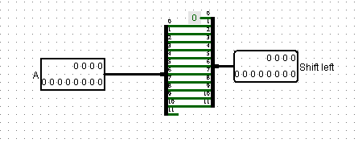

Titel: CA Project 3: ALU
Dit verslag werd opgesteld door:
De oplossing bestaat uit de volgende bestanden:
ALU: Volledige ALU: Add: We hebben gebruikgemaakt van onze adder uit de vorige oefening. Enkel hebben we een paar aanpassingen moeten maken aan onze overflow, aangezien die anders werkt bij two's complement dan bij unsigned integers. We kijken naar de most significant bit van beide termen. We gebruiken een XNOR gate. Hierdoor krijgen we enkel een 1 als output als ze beide gelijk zijn. Dan kijken we naar de normale overflow en de most significant bit van de output, we passen daar een XOR gate op toe. Zodat we een 1 als output krijgen als ze verschillend zijn. Als we dan deze twee steken in een and gate komen we op de juiste overflow voor two's complement. Subtract: We gebruiken onze adder maar zetten een not bij de B en zorgen ervoor dat de carry-in 1 is. Hierdoor werkt onze adder als subtractor. De overflow wordt hetzelfde berekend, enkel nemen we hier de most significant bit van NOT B. And: Voor AND moesten we gewoon een AND gate gebruiken. Or: Voor OR moesten we gewoon een OR gate gebruiken. Less than, Greater than, Equals en Not Equals: Less than: We trekken B af van A door gebruik te maken van de subtractor. Als A kleiner is dan B, dan zou de most significant bit 1 moeten zijn. We kijken ook of er overflow is. Dus we krijgen enkel een output als maar 1 van de twee inputs 1 is. Greater than: Grotendeels hetzelfde als less than enkekl kijken we hier naar de niet not versie van de most significant bit. Hier hadden we weer beter gebruik kunnen maken van een XNOR gate in plaats van de mux en XOR. We voegen nog een extra XOR toe. Met daarin equal, zodat we niet per ongeluk True terugkrijgen als equal True is. Not equal: We voegen gewoon een NOT gate toe na de equal. Equal: We hebben een circuit gemaakt dat voor 4 bit inputs kijkt of ze gelijk zijn. Die we in het grote circuit dan drie keer gebruiken. En in een AND gate stoppen, zodat we een 1 terugkrijgen als alle bits gelijk zijn. Not: We maken gebruik van een NOT gate. Inverse: We krijgen de inverse door gebruik te maken van de NOT te nemen van de originele input en daarbij 1 op te tellen. De overflow werkt hetzelfde als bij de Adder. Shift left logical: We verplaatsen elke bit eentje naar links, verwijderen de most significant bit en voegen 0 toe als least significant bit.  Shift right logical: We verplaatsen alle bits naar rechts, verwijderen de least significant bit en voegen een 0 toe als most significant bit. Shift left arithmetic: Hetzelfde als sll enkel is er hier overflow aanwezig die bepaald wordt door de originele most significant bit en de nieuwe. Er is enkel overflow als zo verschillende binaire waardes hebben. Shift right arithmetic: Hetzelfde als srl enkel wordt the most significant bit hetzelfde als de originele most significant bit. Zero: We zetten gewoon een constante 0 als output. No operation: We laten gewoon de input A doorgaan en veranderen er niets aan.
{kind=link}